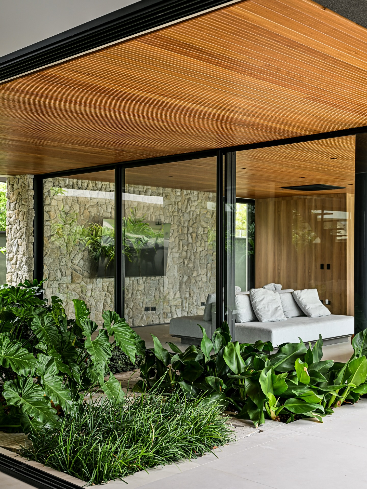
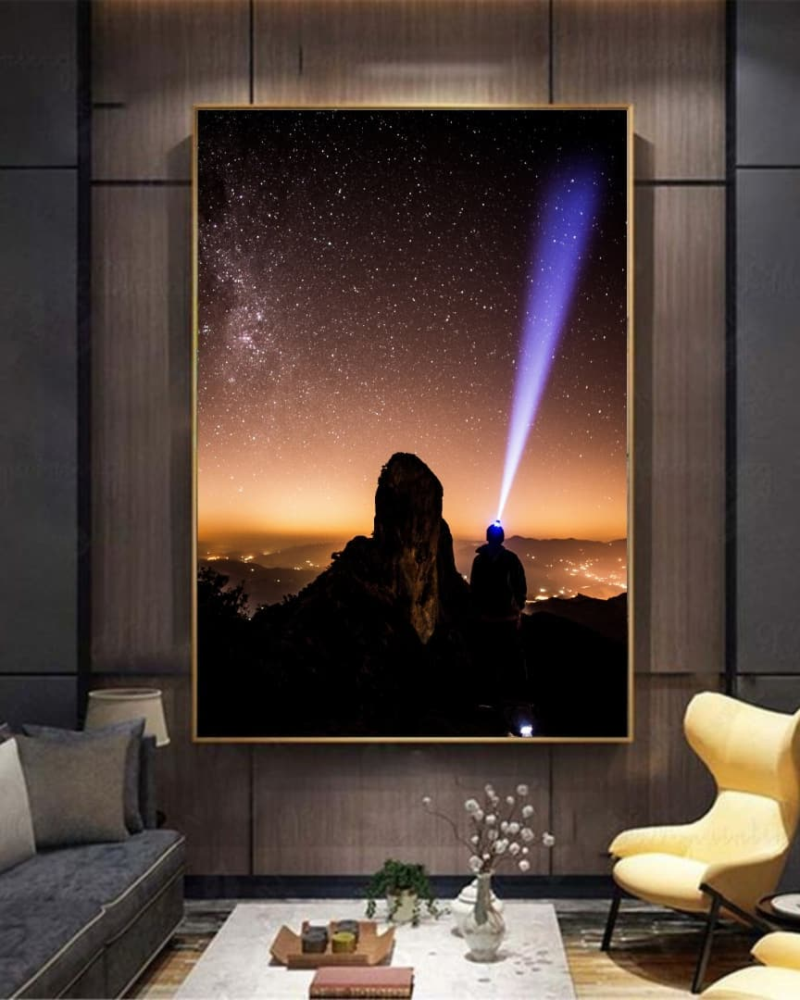

Arquitetura em sua melhor luz
Projetos, interiores e imóveis fotografados na hora certa do dia.
Ver arquiteturaRetratos que vêm depois da pose
Autorais, de família e profissionais, em estúdio ou locação.
Ver retratosFine art para morar na parede
Fotografia autoral em tiragem limitada, do mar ao céu da serra.
Ver o catálogo


Arquitetura
O projeto visto como foi sonhado
A foto apresenta o projeto antes da primeira reunião.
- Arquitetos e designers de interiores
- Construtoras e incorporadoras
- Imobiliárias e proprietários

Retratos
O melhor vem depois da pose
Com tempo para a pessoa esquecer a câmera.
- Autoral
- Família e gestante
- Profissional

Fine art
Escolha a sua no catálogo
Fotografia autoral em tiragem limitada, impressa para morar na sua casa.
- Mar, serra e céu
- Para casas, escritórios e projetos de interiores
- Você escolhe as obras e recebe os valores

RobsonSalgado
Robson fotografa há 25 anos. Começou menino, nas festas da família, com câmeras amadoras e sem saber que aquilo viraria profissão.
Passou pelo retrato, pela publicidade e pela moda antes de chegar aos casamentos. Da moda trouxe o gesto. Da publicidade, o rigor. No casamento aprendeu a esperar sem interferir.
Depois vieram as casas: projetos de arquitetura e interiores que pedem linha reta e paciência. E, nas madrugadas livres, o mar e a serra, que hoje são a sua fotografia autoral.

“Eu fotografo com o coração.”
Uma vida atrás da câmera
- Infância
- Os primeiros cliques, em festas de família, com câmeras amadoras.
- O ofício
- Retrato, publicidade e moda. A luz de estúdio vira linguagem.
- 2008
- Abre um acervo público com cerca de 300 fotos: idosos em preto e branco, montanhas, cachoeiras.
- Casamentos
- Anos de estúdio com equipe, vídeo e álbuns ensinam a esperar o instante.
- Arquitetura
- Escritórios da região confiam a ele a imagem dos seus projetos. Vira o centro do trabalho.
- Hoje
- As coleções de fine art levam o mar e a serra para dentro das casas.
Onde atendemos
- Vale do Paraíba
- Serra da Mantiqueira
- Litoral Norte
- Sul de Minas
É em outra cidade?
Viajamos bastante a trabalho. Conte onde será e combinamos juntos.
Antes de perguntar
- Como fica a escolha do horário?
- A luz decide. A visita define a melhor hora de cada ambiente.
- Como compro uma obra?
- Escolha no catálogo e envie a seleção pelo WhatsApp. Tamanho, moldura e valor são combinados na conversa.
- Vocês viajam para fotografar?
- Sim. Fora das regiões que atendemos, a viagem é combinada caso a caso.
Qual é o seu projeto?
Uma casa, um retrato, uma parede. A mensagem já vai pronta: é só enviar.